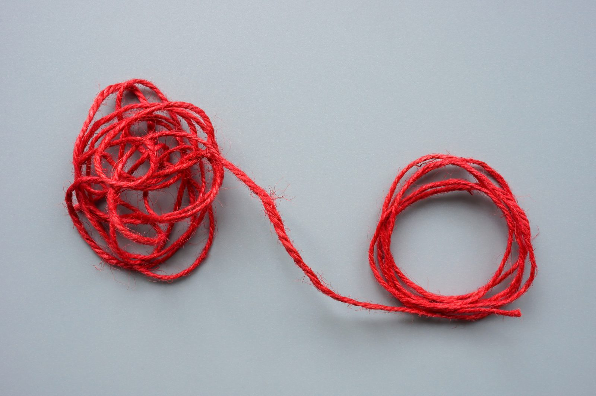
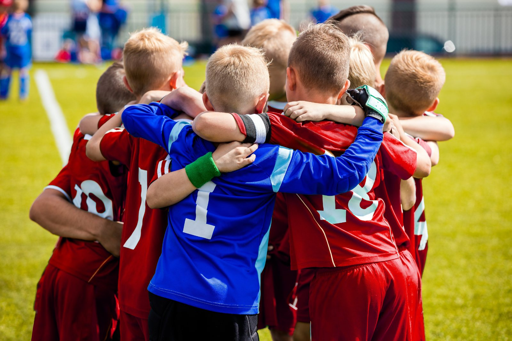
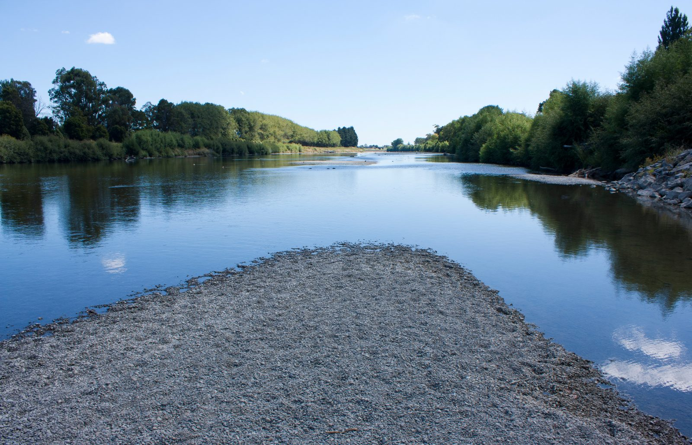

MINDSET
MINDSET
Confidence Is Not a Feeling You Wait For
Being physically ready and feeling ready are two very different things, and the gap between them is where good athletes quietly get stuck.
Read more →
A psychological playbook for coaches and athletes. Because injury is never just physical, and neither is recovery.

The session is nearly over when a player hangs back. They rub the same spot on their knee and say, “It’s probably nothing.” The coach has cones to collect, parents are waiting, and there is no physio beside a community field on a wet Tuesday night. So everyone does what sport has quietly taught them to do: carry on and see how it feels next week.
Sometimes it settles. Sometimes that moment is the beginning of a much longer story.
Fifty years of research, in three words
Rehabilitation.
Return to sport.
Sport injury is not only a tissue event. Stress, attention, sleep, relationships, identity, fear and team culture can shape all three (Tranaeus et al., 2024).
What this does not mean
That does not mean injuries are “all in your head,” or that stress causes every injury. Psychology belongs alongside medical assessment, sensible training loads and quality rehabilitation—not in place of them.
From my own playing days
I still remember one incident from my own playing days that began with my big toe. Stay with me—I promise it does not get gross.
It was the final training session before we travelled to a national tournament: the big opportunity. I drove into the scrum machine one last time and felt a sharp pain shoot through my big toe and into my foot. By the next morning, I could hardly walk. So, what was my carefully considered plan? YouTube.
A few searches later and—bam—turf toe. Or, at least, that was the verdict reached by one worried young prop and an internet connection. That evening, my boots became a workshop. I shifted the 21 mm studs around, tried to work in some 18s and, God forbid, considered a few 16s. If you do not know much about rugby studs, there is far more science—and considerably more fierce seriousness—than anyone outside the front row might reasonably expect. Then I moved on to the insoles. Perhaps, I thought, I could add something rigid enough to stop the toe flexing.
As the modifications became more elaborate, the mental noise became louder. What if I cannot play? What if I lose my place? What if I let everyone down? Each worry produced another solitary solution. Yet the most obvious step—telling the physio or coach—barely entered my thinking. It simply did not feel as though it was on the card.

Looking back, that is the part of the story that stays with me. It is not whether my YouTube diagnosis was correct or whether my stud configuration made biomechanical sense. My instinct was to hide the problem, solve it alone and protect my chance to play. I do not tell this story to grumble about the system or blame an individual coach. I tell it because it now guides me when I think about athletes in our care.
When an athlete becomes remarkably resourceful at working around pain, we should not ask only one question. We should ask two.
The question we always ask
“What is the injury?”
The question worth adding
“What has made speaking up feel less available than managing this alone?”
Research cannot tell us that the thoughts running through my head caused that injury, and one personal story cannot establish cause and effect. It does, however, bring the research to life. Strong stress responses can affect attention, decision-making and movement control, while sporting relationships and cultures can shape whether athletes share concerns or keep pushing quietly.
Preventative stress-management programmes—using approaches such as relaxation, mindfulness, acceptance and cognitive-behavioural skills—aim to give athletes more options before pressure narrows their thinking. Across a relatively small body of experimental research, these programmes have generally been associated with fewer injuries, although study quality and reporting bias limit how certain we can be (Gledhill et al., 2018; Ivarsson et al., 2017).
The practical lesson is not simply “teach athletes to calm down.” It is to combine psychological skills with an environment in which asking for help genuinely feels like an available move.
Return to sport is harder to reduce to a single psychological protocol. Athletes return from different injuries, at different ages, into different sports and team environments. Their medical status, rehabilitation access, previous experiences, identity and fear of reinjury also vary.
Researchers may measure confidence, anxiety, adherence, wellbeing, return rates or performance—and strategies such as imagery, goal setting, mindfulness and cognitive-behavioural support are often combined with physical rehabilitation rather than tested on their own. Studies are therefore smaller, more varied and harder to compare, making it difficult to identify exactly which psychological ingredient helped, for whom, and at what stage (Schwab Reese et al., 2012; Tranaeus et al., 2024).
So, the difference is not “stress management works, return-to-sport psychology does not.”
Preventing injury
Clearer pathwayStress-management research currently offers a clearer intervention-to-outcome pathway.
Across a relatively small body of experimental research, with study quality and reporting bias limiting how certain we can be.
Returning to sport
Promising, less certainReturn-to-sport approaches are promising and clinically sensible, but the evidence is less certain and supports individualised, shared decision-making rather than a universal mental protocol.
Smaller, more varied studies, usually combined with physical rehabilitation, so the active ingredient is hard to isolate.
There are important boundaries around the evidence as a whole, and they are worth naming before anyone applies it to a community or school team.
We should use the principles thoughtfully, not pretend every finding transfers perfectly to a Year 10 netball team or senior reserve rugby side.
With that honesty in place, there is still plenty coaches and athletes can do.
Playbook — Part One
Four practices you can start using at the next session. None of them require a counselling qualification, and none of them replace a medical opinion.
01
Stress responses appear to be the strongest established psychological risk factor for acute sport injury. Under stress, attention can narrow, decision-making can become less reliable, muscular fatigue may increase and neuromuscular control may decline (Ivarsson et al., 2017; Tranaeus et al., 2024). That is a risk signal, not a prediction. A stressed athlete is not destined to get injured.
As an informal conversation starter, try a 60-second check-in before training. Ask athletes to rate three things from 1–5. Try it yourself below.
The 60-second check-in
Conversation starterNot a validated screening scale, and not a diagnostic tool. Nothing you enter here is stored or sent anywhere.
–Stress
–Sleep
–Recovery
The value is not the score. It is the kōrero the score opens.
This is not a validated screening scale or diagnostic tool. Do not turn it into amateur diagnosis or punish honesty with automatic non-selection. Look for change: the usually energetic athlete who reports two poor nights, exam stress and heavy legs may need a conversation or an adjusted session.
02
Research on overuse injury points to a wider system: perfectionistic concerns, obsessive passion, previous injury and ignoring bodily warning signs may combine with poor coach-athlete relationships, low support and cultures that normalise pain (Tranaeus et al., 2022). These are potential risk factors, not proven causes, but they should make coaches curious about the stories their environment rewards.
If “tough” always means silent, athletes learn to hide useful information. Replace “Can you push through?” with:
Praise the judgement involved in speaking early. A young athlete should not have to choose between protecting their body and proving they belong.
03
Injury can remove far more than playing time. Athletes may lose routine, confidence, connection and a valued part of who they are. Perceived social support is linked with better rehabilitation experiences, while lack of support from coaches and teams can make rehabilitation harder (Tranaeus et al., 2024).

Support does not require a counselling qualification. Send the message. Include them in the team chat. Invite them to the parts of training they can safely attend. Give them a meaningful role—helping with video, leading a non-physical activity, welcoming new players—without turning them into unpaid staff. Most importantly, sometimes ask about life rather than the injury.
One useful weekly question: “What would help you feel part of the team this week?”
04
Medical clearance and psychological readiness are related, but they are not identical. Returning athletes commonly face three needs: competence (“Can I still do this?”), autonomy (“Do I have a say?”), and relatedness (“Do I still belong?”) (Podlog & Eklund, 2007; Tranaeus et al., 2024).
Work with the athlete and relevant health professional to build progressively more realistic steps:
Individual movement
Controlled skill
Predictable contact
Chaotic training
Competition
A necessary caveat
The exact ladder depends on the injury and sport; it should never be improvised against medical advice.
At each step, ask four questions:
This turns confidence from something the athlete must magically feel into something they can gradually learn through safe experience. If that idea is useful to you, we have written about it at length in Confidence Is Not a Feeling You Wait For.
Playbook — Part Two
Four things to take into your own week. None of them ask you to talk yourself out of what you are feeling.
01
Stress is part of sport and life. One rough sleep or difficult school day does not mean you should stop training. But repeated changes in sleep, wellbeing and perceived recovery are useful information (Tranaeus et al., 2024).
Use the same three ratings—stress, sleep and recovery—for two minutes each day. Add one sentence: “What is influencing these numbers?” After a week, look for patterns. Then share the pattern with someone who can help: your coach, parent or whānau member, physio, doctor, or strength and conditioning coach.
Self-monitoring only helps if it changes a conversation or decision. It is not another test to pass.
02
Pain needs appropriate medical attention. Alongside the sensation, the mind may produce stories: “I am falling behind,” “Coach will replace me,” or “If I feel fear, I am not ready.” Fear of reinjury and pain catastrophising can complicate recovery, while psychological interventions involving relaxation, imagery, goal setting, mindfulness and acceptance have shown encouraging rehabilitation benefits (Schwab Reese et al., 2012; Tranaeus et al., 2024).
Try this simple acceptance-based prompt: Name–Notice–Choose.
Name
“My mind is giving me the ‘I’ll never get back’ story.”
Notice
Where do fear and tension show up in your body?
Choose
What is the next safe, useful action agreed within the rehabilitation plan?
The aim is not to convince yourself everything is fine. It is to stop a frightening thought from becoming the only voice making decisions.
03
Your rehabilitation plan probably contains physical targets. Add a psychological lane.
Physical
Psychological
Complete the agreed running progression.
Tell the physio when fear reaches 7/10 rather than hiding it.
Rejoin controlled training.
Use imagery to rehearse the movement, then record what actually happened.
Process goals, guided imagery and cognitive-behavioural approaches have shown promise during rehabilitation, although the evidence base remains modest and interventions should be matched to the individual (Schwab Reese et al., 2012; Tranaeus et al., 2024).
04
“I’m fine” gives your support team very little to work with. Before a return-to-sport conversation, finish these three sentences:
You can be medically cleared and still nervous. You can also feel desperate to play before your body is ready. Neither feeling should be hidden, and neither should make the decision alone. Good return-to-sport decisions are shared decisions, with clear communication between the athlete, coach and qualified health professionals (Gledhill et al., 2022; Tranaeus et al., 2024).
Community and school teams may not have an interdisciplinary performance department. They can still create an interdisciplinary habit.
Before the next session, agree on three things:
Put it in the team chat. Tell the whānau. Practise the conversation before the stakes are high.

Because injury is never just physical. Neither is recovery.
The strongest sporting environments do not ask athletes to choose between performance and care. They understand that care is part of how people keep performing—and how they keep wanting to play.
If you are supporting an injured athlete, or you are the one quietly working around pain right now, this is exactly the sort of thing we work on. Have a look at our Approach to see how we do it, head to GROW for more on building skills that hold up under pressure, or get in touch for a kōrero about where you are at.
Gledhill, A., Forsdyke, D., & Murray, E. (2018). Psychological interventions used to reduce sports injuries: A systematic review of real-world effectiveness. British Journal of Sports Medicine, 52(15), 967–971. https://doi.org/10.1136/bjsports-2017-097694
Gledhill, A., Forsdyke, D., Goom, T., & Podlog, L. W. (2022). Educate, involve and collaborate: Three strategies for clinicians to empower athletes during return to sport. British Journal of Sports Medicine, 56(5), 241–242. https://doi.org/10.1136/bjsports-2021-104268
Ivarsson, A., Johnson, U., Andersen, M. B., Tranaeus, U., Stenling, A., & Lindwall, M. (2017). Psychosocial factors and sport injuries: Meta-analyses for prediction and prevention. Sports Medicine, 47(2), 353–365. https://doi.org/10.1007/s40279-016-0578-x
Podlog, L., & Eklund, R. C. (2007). The psychosocial aspects of a return to sport following serious injury: A review of the literature from a self-determination perspective. Psychology of Sport and Exercise, 8(4), 535–566. https://doi.org/10.1016/j.psychsport.2006.07.008
Schwab Reese, L. M., Pittsinger, R., & Yang, J. (2012). Effectiveness of psychological intervention following sport injury. Journal of Sport and Health Science, 1(2), 71–79. https://doi.org/10.1016/j.jshs.2012.06.003
Tranaeus, U., Gledhill, A., Johnson, U., Podlog, L., Wadey, R., Wiese Bjornstal, D., & Ivarsson, A. (2024). 50 years of research on the psychology of sport injury: A consensus statement. Sports Medicine, 54(7), 1733–1748. https://doi.org/10.1007/s40279-024-02045-w
Tranaeus, U., Martin, S., & Ivarsson, A. (2022). Psychosocial risk factors for overuse injuries in competitive athletes: A mixed-studies systematic review. Sports Medicine, 52(4), 773–788. https://doi.org/10.1007/s40279-021-01597-5
MINDSET
Being physically ready and feeling ready are two very different things, and the gap between them is where good athletes quietly get stuck.
Read more → COACHING
COACHING
The righting reflex tempts every coach to fix. Why holding back, and offering one good reflection, can transform your coaching conversations.
Read more → MINDSET
MINDSET
Drawing on challenge-and-threat research, why your racing heart might be good news, and evidence-based ways to change your relationship with pressure.
Read more →